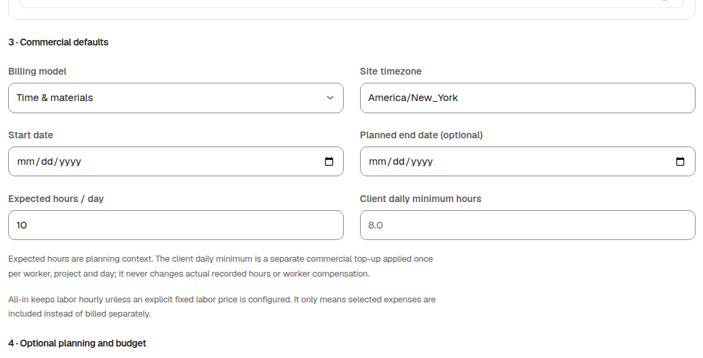
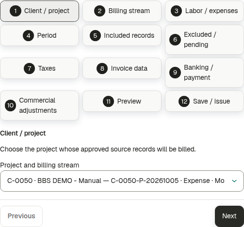

J&A Automation · Owner and team illustrated manual
BBS · Project to client invoices
A complete illustrated Owner, Finance, crew-chief and worker guide.
English instructions · Actual application captures · Downloaded invoice PDFs included.
Training project: BBS · Ejemplo de manual Project number: C-0050-P-20261005
Example
Approved sources
Downloaded draft PDF
Stage 1 · 1–4 October
35 actual hours
USD 2,230 labor
Expenses · October
4 expenses; USD 230 spent
USD 182 customer expense recovery
Stage 2 · 5–11 October
7.5 actual hours; hour/day/week units
USD 2,260 labor
Use the contents pages to find a task. Each chapter gives the role, exact navigation path, fields to fill and buttons to click. Important forms have a separate enlarged screenshot page. Saved example names/descriptions are quoted exactly as displayed, including their original record language.
J&A Automation · Owner and team illustrated manual
Contents · Setup and operations
Click a chapter link where supported, or go to its printed page number. Large screenshot pages follow their instructions.
J&A Automation · Owner and team illustrated manual
1 · Understand the complete workflow
Go here: Owner → Projects; workers/chief → Time, Expenses or Crew; reviewer → Approvals; Owner/Finance → Billing Open this workspace
Item
Meaning
Issuer
J&A, the company selling services and issuing the invoice.
Client
The customer receiving the invoice and paying J&A.
Customer rate
What J&A charges for a person’s hour, worked day or worked week.
Worker pay
Separate compensation for that person.
Internal cost
The direct labor cost used in the project contribution calculation.
Expense
A source purchase with independent payer, reimbursement and client recovery rules.
Sign in as the owner and open Projects. Set up the client, project, assignments and dated commercial terms.
Workers or a delegated crew chief record time and expenses, then submit them.
An authorized reviewer approves the operational records. Finance reviews billability and expense classification.
Configure billing streams and prepare invoice drafts. Review their source records, quantities, totals and PDF.
For a real client invoice, approve, issue, download the final PDF, send it and separately record actual collection.
J&A Automation · Owner and team illustrated manual
Before creating the project
Prerequisite
What the Owner must do
Account
Sign in as Owner; Finance has only its permitted administration scope.
Client
Create/select the customer with correct currency, contact/email and billing address.
Workforce
Create/activate real worker accounts before assigning them. Example accounts are fictional.
Agreement
Know customer charge, worker pay, internal cost, who pays expenses and who reimburses/recovers them.
Dates
Choose project start/timezone and assignment/term effective dates covering the work.
Billing policy
Know the contract’s invoice cadence, issuer and applicable taxes. These are reviewed again before invoices.
J&A Automation · Owner and team illustrated manual
2 · Create a client and project
Go here: Owner → Projects → More actions → New Client; then Projects → New Project Open this workspace
Click Projects. Click More actions, then New Client. The panel heading is Create client.
Fill the legal name, display name, currency and timezone. Fill billing address and either billing email or the required billing contact name. Set agreed payment terms and the PO/reference. Click Create client.
Click Projects → New Project. In 1 · Basics, select the saved client. Fill the project name and cost center. Choose currency. Review the optional description, alias and manager.
Continue through 2 · People and 3 · Commercial defaults as explained on the following pages. Fill the start date and timezone, and select the applicable reporting/budget choices.
Click Create project once. Reopen the saved project, check its number and team, and use Edit project to review/update the PO and remaining project details.
J&A Automation · Owner and team illustrated manual
Client fields · what to enter
Go here: Projects → More actions → New Client → Create client Open this workspace
Field
Meaning / action
Legal name / Display name
Legal invoice customer identity versus the name shown in directories. Fill both as required.
Client code (optional)
Optional customer reference; do not reuse an existing code unintentionally.
Currency / Timezone
Customer currency and local context; project currency is selected independently when created.
Billing contact name / email
Fill a usable billing identity/recipient. The form requires a contact name if no billing email is provided.
Billing address
The customer’s billing destination shown on invoices.
Payment terms (days)
Agreed number of days from invoice date. Zero is a real value; review any suggested starting default.
PO / reference
Client-level purchase reference used when a selected project has no project-specific PO.
Notes
Optional internal context; it is not a payment or invoice.
After filling the fields, click Create client. Select the saved client when creating the project.
J&A Automation · Owner and team illustrated manual
Create project · required and optional basics
Projects → New Project → 1 · Basics. Choose the saved client, fill Name and Cost center code, then review Currency and the optional fields.
J&A Automation · Owner and team illustrated manual
Project fields · basics and dates
Field
Meaning / action
Client
Select the saved customer; it controls customer references, not a worker’s private compensation.
Name / Cost center code
Fill a readable project name and unique cost center ending in digits. The trailing digits determine the project-number suffix.
Description / Project alias
Optional context and alternate project label; these do not create work.
Currency
Select the contract currency. Rates, invoices and issuer must be compatible with it.
Project manager
Optional assigned manager; choose an available authorized manager or leave Unassigned.
Site timezone
Actual work/site timezone for date and clock interpretation. The saved BBS example uses America/New_York.
Start / Planned end date
Real start date and optional planning end; assignment and legal-authority dates are checked separately.
Fill these fields before Create project. After saving, use Edit project for permitted project details such as the PO.
J&A Automation · Owner and team illustrated manual
Commercial defaults · models and hours
Go here: Projects → New Project → 3 · Commercial defaults Open this workspace
Option
What it changes
Time & materials
Customer work is charged by the configured dated source/person terms. The training example uses this model.
T&M · daily minimum
A configured hourly customer minimum can add a commercial top-up; it does not fabricate actual time or change worker pay.
Hourly labor with included expenses (all-in)
Eligible labor remains hourly and selected expenses are included in its price. Hour-based included-minute combinations require hourly customer rates.
Capped T&M
T&M with the agreed cap/budget constraints. Fill the appropriate contractual cap rather than treating it as a flat rate.
Expected hours / day
Planning/reference hours only, never actual or submitted time.
Client daily minimum hours
A separate hourly commercial minimum, not the Daily billing-unit rate or the worker’s compensation.
J&A Automation · Owner and team illustrated manual
Project commercial defaults
Select Billing model deliberately. Review Expected hours / day and the separate Client daily minimum hours field.
J&A Automation · Owner and team illustrated manual
Budgets and reporting · optional controls
Field
Meaning / action
Budget type
No budget, Revenue, Purchase order, Labor, Travel, Expenses or Combined select the planning/contract limits to review.
Revenue budget / PO cap
Expected customer revenue or agreed purchase-order ceiling, in project currency.
Planned labor hours
Planning allowance; it does not create hours or approved compensation.
Expense / Travel budget
Planning cost allowances; they are not recorded expenses.
Weekly close required
Requires the configured weekly closure flow; review before submitting/closing periods.
Daily / Technical reporting required
Enable when the contract/workflow requires the corresponding reports. Required sign-off can affect final invoice readiness.
Enter only the agreed budget amounts/hours. Leave optional budgets empty when they do not apply. Click Create project after reviewing all sections.
J&A Automation · Owner and team illustrated manual
Project budgets and report requirements

3 · Commercial defaults: optional budgets and weekly/daily/technical reporting flags.
J&A Automation · Owner and team illustrated manual
Optional worker table during creation
Go here: Projects → New Project → 2 · People → Worker assignments (optional) Open this workspace
Expand Project defaults for people (optional) if new assignments should start from common terms. Select the save-defaults checkbox and fill the dated agreement.
Expand Worker assignments (optional). Click Add worker assignment. Select an active Worker; fill Starts on and optional Ends on.
Select Terms source: Use project defaults or Override for this person. For an override, fill customer billing unit/rate, internal cost, worker compensation and expense terms.
Add another row for each worker. Remove removes that unsaved row, not an existing worker account.
Click Create project only after reviewing the complete form. These illustrative screenshots do not save another BBS project.
J&A Automation · Owner and team illustrated manual
Optional assignments · worker, dates and terms source
Choose Worker and assignment dates first. Choose Override for this person to reveal the individual fields. The toolbar is excluded from this new capture.
J&A Automation · Owner and team illustrated manual
Optional assignment · individual terms enlarged
Individual charge, worker compensation and expense treatment in the creation form. Fill each value and review the selected payer; creating the project saves the configured rows.
J&A Automation · Owner and team illustrated manual
3 · Project defaults and person overrides
Go here: Owner → Projects → open BBS · Ejemplo de manual → Billing → Configure project defaults; then Configure this project’s invoices → 3. Review each person Open this workspace
Open the saved project and click its Billing tab. Expand Configure project defaults under Project defaults for people. Fill the effective date and default terms, then save.
Under Configure this project’s invoices, click the numbered 3. Review each person step. This is project configuration, not the invoice-creation dialog.
In Person, choose the required worker and click Go to person. Fill that person’s dated charge, pay and expense agreement.
Click Save person terms. Wait for confirmation and reopen/reload to check persistence. Repeat for the other workers.
Use Copy draft terms from and the selection boxes only when people intentionally share terms. Review every selected person and effective date before Save selected people.
J&A Automation · Owner and team illustrated manual
Where to find Review each person
Project → Billing → Configure this project’s invoices → 3. Review each person. Use Person and Go to person; each worker has a separate Save person terms button.
J&A Automation · Owner and team illustrated manual
Effective dates, overrides and bulk controls
Control
Meaning / action
Terms effective from
The date on which the new agreement applies. Keep earlier work/rates unchanged by choosing the intended later date.
Use project defaults in this draft
Copies current defaults into the draft only. Review and click Save person terms to apply.
Save these rates as explicit person overrides
Pins even matching rates as deliberate person agreements. Later project-default changes do not erase those overrides.
Select this person for bulk actions
Select only people who should receive the bulk draft.
Copy draft terms from / Apply to selected people
Copies draft terms; review every selected person and date before saving.
Save selected people
Saves the selected agreements after validation, not every unselected worker.
Same-date agreement warning
Existing terms on the same date are immutable; choose a later effective date rather than trying to overwrite them.
J&A Automation · Owner and team illustrated manual
4 · J&A issuer and invoice details
Go here: Owner/Finance → project → Billing → Configure this project’s invoices → 2. Billing details Open this workspace
In 2. Billing details, J&A Automation is selected by default for the matching project currency. Review it when setting up new or existing projects.
Check billing contact, recipient and payment terms. Selecting a project in New billing stream fills available project/client currency, PO, contact, email and terms.
Select Standard, Detailed or Summary layout, and grouping by worker, day, category, detail or summary. These options affect presentation, not approved source money.
Choose applicable labor and expense tax profiles if configured. The example has no tax profile; do not invent tax settings to copy it.
Automatically preparing drafts is optional. It is disabled in the training project. Invoices are never automatically issued or sent by this setup.
J&A Automation · Owner and team illustrated manual
Project billing · issuer, taxes, cadence and delivery
2. Billing details. Review issuer/currency, tax, cadence, layout, grouping, recipient and terms before saving.
J&A Automation · Owner and team illustrated manual
Issuer settings and tax profiles
Go here: Billing → Configure billing → expand the setup directories Open this workspace
Owner option
Meaning / action
Invoice issuers → New invoice issuer
Create the selling company’s identity/currency, address and identifiers. Select the correct issuer for the project.
Invoice issuers → Edit / Archive
Edit permitted identity fields or retire the issuer from active choices while preserving history.
Issuer payment and contact settings → Add / Edit
Fill the issuer’s payment instructions, bank and contact fields; save and reopen the directory to verify.
Clear payment and contact settings
Clears those fields through a confirmed action; it does not delete the issuer.
Tax profiles → New tax profile
Create the applicable currency/issuer, effective date and tax components/rates. Review tax applicability with the business policy.
Tax profile Edit / Archive
Rename an existing profile or archive it. A changed rate/date/currency requires a new profile explicitly selected for the relevant stream.
J&A Automation · Owner and team illustrated manual
5 · Crew chief: hourly billing and hourly pay
Go here: Owner/Finance → project → Billing → 3. Review each person → Person: BBS DEMO - Jefe de crew → Go to person Open this workspace
Set the separate worker compensation method to Hourly, USD 40/h. The USD 80 customer charge is not the worker’s pay.
For worker-paid expenses use at-cost reimbursement and client recovery with 10% markup.
Save and reload. In stage 1, ten actual hours produce USD 800 customer labor and USD 400 expected compensation. No compensation payment is recorded.
J&A Automation · Owner and team illustrated manual
Person terms · customer charge, cost and worker pay
3. Review each person: fill Terms effective from, Customer billing unit/rate and the independent Worker compensation method/rate. Then save that person.
J&A Automation · Owner and team illustrated manual
Person terms · reimbursement and customer expense recovery
Choose Expense payer, reimbursement source, reimbursement and customer recovery. Save the selected payer’s policy; policies for other payers remain separate.
J&A Automation · Owner and team illustrated manual
6 · Technician 1: full daily customer charge
Go here: Owner/Finance → project → Billing → 3. Review each person → Person: BBS DEMO - Tecnico 1 → Go to person Open this workspace
Set the new agreement effective from 5 October 2026. Earlier work remains at its initial USD 60/h customer rate.
Keep worker pay Daily, USD 240/day, with internal cost USD 35/h. Customer daily charge and worker daily pay are separate fields.
Keep worker-paid expenses, project-default reimbursement and client recovery at cost.
Click Save person terms and reload. Two approved billable parts of 1.5 h and 0.5 h on one day charge one full day: USD 600.
J&A Automation · Owner and team illustrated manual
Person terms · customer charge, cost and worker pay
3. Review each person: fill Terms effective from, Customer billing unit/rate and the independent Worker compensation method/rate. Then save that person.
J&A Automation · Owner and team illustrated manual
Person terms · reimbursement and customer expense recovery
Choose Expense payer, reimbursement source, reimbursement and customer recovery. Save the selected payer’s policy; policies for other payers remain separate.
J&A Automation · Owner and team illustrated manual
7 · Technician 2: weekly charge, fixed-period pay
Go here: Owner/Finance → project → Billing → 3. Review each person → Person: BBS DEMO - Tecnico 2 → Go to person Open this workspace
Keep worker compensation Fixed per billing period, USD 900, and internal cost USD 30/h. The compensation period is not automatically the customer weekly charge unit.
Use Company card for expenses, no worker reimbursement and expenses included in labor price.
Save and reload. Check USD 1500/week and confirm the compensation and expense choices were preserved.
The customer week is Monday–Sunday. Two approved billable parts of 2 h and 1.5 h in the same week charge USD 1500 once.
J&A Automation · Owner and team illustrated manual
Person terms · customer charge, cost and worker pay
3. Review each person: fill Terms effective from, Customer billing unit/rate and the independent Worker compensation method/rate. Then save that person.
J&A Automation · Owner and team illustrated manual
Person terms · reimbursement and customer expense recovery
Choose Expense payer, reimbursement source, reimbursement and customer recovery. Save the selected payer’s policy; policies for other payers remain separate.
J&A Automation · Owner and team illustrated manual
8 · More compensation and expense options
Go here: Owner/Finance → project → Billing → 3. Review each person; additional policies: Finance → Commercial Configuration Open this workspace
Compensation method
How to use it
Hourly
Rate for eligible actual hours.
Daily
Daily compensation under its applicable rules.
Fixed per billing period
One configured amount for the applicable settlement period.
Fixed project amount
A project-level fixed agreement; review its settlement.
Percentage of eligible client labor
Configured percentage and eligible labor basis; not a percentage of every expense or tax.
Expense choice
Effect
Worker
Can reimburse at cost or not reimburse.
Company card / Company direct
Company pays; do not reimburse the worker.
Client / Third party
Identify the actual payer and review the applicable policy.
At cost / Cost plus markup
Recover the source cost or source cost plus markup from the client.
Included / Do not charge / Client pays directly
No additional labor-inclusive charge, nonbillable recovery or direct client payment.
J&A Automation · Owner and team illustrated manual
Customer unit and worker compensation · two decisions
Customer billing unit
Calculation
Hourly
Eligible approved billable duration × the dated hourly customer rate.
Daily
Full configured customer rate once for a person/project/worked day with eligible approved work. A partial day is still a full unit.
Weekly
Full configured customer rate once for a person/project/Monday–Sunday worked week with eligible approved work. A partial week is still a full unit.
Worker compensation
Meaning
Hourly / Daily
Worker’s own rate and applicable actual/approved-hour or daily rules. These are not the customer charge.
Fixed per billing period
Configured amount for the applicable compensation/settlement period; not another amount for each time part.
Fixed project amount
Project fixed agreement; review its settlement rather than multiplying it by hours.
Percentage of eligible client labor
Fill the percentage and choose the eligible labor basis: before tax, after approved discount, issued or collected eligible labor. Expenses/tax are not automatically part of that basis.
J&A Automation · Owner and team illustrated manual
9 · Assign the crew and chief
Go here: Owner → Projects → project → Team for memberships; then Crew → select project → Show project → Assign a crew chief Open this workspace
Open Projects → BBS training project → Team. Assign the three active worker accounts with assignment dates covering the work. New workforce accounts must exist and be active before they can be chosen.
Click Crew. Select the BBS training project and work date, then click Show project. Owner sees Assign a crew chief.
Select Chief and one Team member. Fill Effective from and optional Effective until. Click Assign chief. Repeat for the second team member.
The chief signs in to their own worker account and opens Crew. Select the project/date. Only delegated, assigned people are available.
Use Log team hours, choose members and shared or different hours. Fill category and Work performed. Choose draft or Submit for approval now, then click the save button showing the member count.
J&A Automation · Owner and team illustrated manual
Owner · assigning the crew chief
Crew → select project/date → Show project → Assign a crew chief. Select Chief and Team member, fill dates, then click Assign chief.
J&A Automation · Owner and team illustrated manual
Chief · shared or individual team hours
Select delegated members; choose Same hours for each selected member or Different hours for each member. Fill the actual hours and activity, then review draft/submission mode.
J&A Automation · Owner and team illustrated manual
Chief · one shared crew receipt
Record one purchase and allocate its total to the selected time records. USD 30 + USD 30 must equal the one USD 60 receipt.
J&A Automation · Owner and team illustrated manual
10 · Record and submit time
Go here: Worker → Time → Log time; crew chief → Crew → Log team hours Open this workspace
As the worker, click Time, then the blue Log time button.
Choose Project and Date. Fill Actual hours in decimal form: 7.5 means seven hours thirty minutes. Select the actual work category and fill the activity summary.
If actual clocks are known, choose Add start and end times and enter the project-local start/end and real break. Keep duration-only work as duration-only when clocks were not recorded.
Click Save draft. Open the saved record from the register and click its available Submit action. To submit a complete reviewed week, use Submit all week drafts.
Check the saved record and calendar. Correct returned work through its permitted correction/edit flow; do not create another source to repeat an existing submission.
J&A Automation · Owner and team illustrated manual
Worker · Log time fields
Time → Log time. Fill assigned Project, Date, actual duration/category and factual activity; use real clocks only when known.
J&A Automation · Owner and team illustrated manual
11 · Stage 1: 35 approved actual hours
Go here: Owner/reviewer → Approvals → select project; then Finance review. Approved entries: Time → Filter time entries Open this workspace
Person
2 October
3 October
Actual total
Customer revenue
Chief
8 h commissioning
2 h overtime
10 h
USD 800
Technician 1
8 h regular
3 h travel
11 h
USD 660
Technician 2
8 h regular
6 h travel
14 h
USD 770
Total
24 h
11 h
35 h
USD 2,230
After submission, open Approvals, choose the training project and apply the filter. Review the operational source facts, then use Approve or the available changes/rejection action with a reason.
In the same workspace, scroll to Finance review. For approved time choose Commercial treatment: Billable or Non-billable, then click Record Finance review.
For an expense that says Classify this expense before Finance review, click Classify expense in Finance, save its treatment, return and record Finance review.
To inspect the example hours, open Time → Filter time entries, select the training project, dates 1–4 October, Approved, all workers and all categories, then click Apply filters.
J&A Automation · Owner and team illustrated manual
Stage 1 · six approved records, 35 hours
Dates 2–3 October: 8+8+8+2+3+6 = 35 actual hours. All six sources are Approved; their Finance review is also saved.
J&A Automation · Owner and team illustrated manual
Finance review · completed queue
Approvals → selected BBS training project → Finance review. After the saved reviews the app shows Finance queue clear. Commercial review follows operational approval.
J&A Automation · Owner and team illustrated manual
12 · Record expenses and a shared receipt
Go here: Worker → Expenses → Record expense; chief → Crew → shared receipt tools Open this workspace
As a worker click Expenses → Record expense. Choose the assigned project and actual expense date.
Select the actual Category. Enter vendor and factual description; fill amount and currency. Select the actual payer/payment method, and attach a receipt where required.
Choose Save draft, inspect the saved entry, then use Submit. Where the app pairs an expense with time, follow its notice and submit the pair through the weekly time workflow.
Examples: parking USD 20 paid by the chief; hotel USD 100 paid by technician 1; company-card tools USD 50 for technician 2.
For a shared crew meal, record one USD 60 receipt and two USD 30 allocations linked to the two technicians. Attach its evidence and submit through the supported crew workflow.
J&A Automation · Owner and team illustrated manual
Expense-entry fields · amount and evidence
Field
What to fill / why
Project / Worker / Date
The assigned project, entitled worker and actual purchase date; Owner’s on-behalf entry remains scoped.
Category / Description / Vendor
Choose what was bought and explain the business reason and supplier.
Amount / Currency
Real purchase value and original currency. Foreign currency may need verified conversion before billing.
Expense payer / payment method
Identify who actually paid: worker, company card/direct, client or third party. This determines which dated payer policy is resolved.
Receipt / Receipt required
Attach the required evidence. Do not claim a receipt exists when it has not been uploaded.
Time expense occurred / Related logged hours
Optional occurrence detail or supported link to the related time source.
Save draft / Submit
Draft is editable working data; submission starts review. Neither action reimburses a worker or invoices the client.
J&A Automation · Owner and team illustrated manual
Record expense · project, date and category
Expenses → Record expense. Start with the assigned project/date and the correct category.
J&A Automation · Owner and team illustrated manual
Record expense · amount, payer and evidence
Fill the actual amount/currency, payer/payment method and supporting evidence. These source facts are reviewed separately from customer recovery.
J&A Automation · Owner and team illustrated manual
13 · Four approved, Finance-reviewed expenses
Go here: Owner/Finance → Approvals → operational approval; Finance → expense classification; Approvals → Finance review Open this workspace
Expense
Payer
Spent
Worker reimbursement
Client charge
Chief parking
Worker
20
20
22
Technician 1 hotel
Worker
100
100
100
Shared meal
Worker
60
60
60
Technician 2 tools
Company card
50
0
0
Total USD
230
180
182
Approve the operational expense first.
In Finance, review/classify its commercial treatment: at cost, plus markup or included. Check the person, date, payer and category policy.
Record Finance review. All four example expenses are approved, classified and reviewed.
The client expense invoice has three additional charges: 22 + 100 + 60 = USD 182. Tools are included, so they add no expense charge.
J&A Automation · Owner and team illustrated manual
Stage 1 · the four approved expenses
Parking, hotel, one shared meal and company-card tools. Their saved Finance classifications/reviews produce USD 182 customer recovery from USD 230 spent.
J&A Automation · Owner and team illustrated manual
14 · Worker and chief views
Go here: Worker → account/workspace navigation → My Pay → choose the period; Time and Expenses show that worker’s own records Open this workspace
Workers review their own time, expenses and My Pay within their account permissions.
For stage 1, technician 1 has 11 h and USD 480 expected daily compensation for two days; reimbursable hotel/meal expenses are USD 160.
Technician 2 has 14 h and the configured USD 900 fixed compensation for the displayed period. It is not multiplied for each source part.
The chief also has Crew access for delegated people. Owner/Finance configures commercial rates and prepares invoices.
My Pay values are projections or compensation states; they do not prove a bank transfer.
J&A Automation · Owner and team illustrated manual
Worker My Pay · amount and project period
Technician 2’s 1–4 October worker view: 840 approved minutes (14 h), USD 900 approved compensation and no reimbursement. The project row and amount are enlarged instead of shrinking an entire long page.
J&A Automation · Owner and team illustrated manual
Worker My Pay · supporting activities
The same worker period’s source activities support the fixed-period result. Worker views retain compensation privacy and do not expose customer rates or internal cost.
J&A Automation · Owner and team illustrated manual
15 · Separate labor and expense billing streams
Go here: Owner/Finance → Billing → Configure billing → New billing stream; alternatively project → Billing → Configure this project’s invoices Open this workspace
Click Billing. Click Configure billing, then New billing stream. The form appears below the three setup directories; scroll down if it is offscreen.
Select Project. Review the prefilled currency, PO, terms and billing recipient/contact rather than typing them from memory.
Choose the stream type and cadence. Fill Effective from and any required anchor. Choose issuer, tax and template deliberately.
Review recipient, payment terms, PO override and automation. Click the form’s save/create button once and wait for confirmation.
Open Billing streams and review the saved dated rule. The BBS examples use a Manual labor period for 1–4 October, a Weekly labor stream from 5 October and Monthly expenses.
J&A Automation · Owner and team illustrated manual
Prerequisites · creating a billing stream
Before clicking Create
What to verify
Role / project
Owner or authorized Finance role; saved accessible project with compatible currency.
In 1 Client / project, choose the project and stream in Project and billing stream. Click Next; review 2 Billing stream and 3 Labor / expenses.
At 4 Period, fill Period start and Period end. Click Check selected period, then Next. Suggested dates come from cadence; a manual change is deliberate.
Review 5 Included records and 6 Excluded / pending. Follow links to resolve missing approvals, terms, locked sources or coverage; do not duplicate the sources.
Review 7 Taxes, 8 Invoice data and 9 Banking / payment: identity, PO, dates, terms, recipient and payment instructions.
Review 10 Commercial adjustments using the approved workflow, then 11 Preview. Check amounts and unit labels.
At 12 Save / issue, click Save invoice draft. Wait for success and open the saved Draft in Invoices.
J&A Automation · Owner and team illustrated manual
Create invoice · project/stream and review stages

Select Project and billing stream, then click Next. The twelve numbered stages identify what you still need to review.
J&A Automation · Owner and team illustrated manual
Create invoice · service-period dates
Fill Period start and Period end. Click Check selected period and Next. Service period is separate from invoice date and due date.
J&A Automation · Owner and team illustrated manual
Labor draft · six sources, USD 2,230
Stage 1: 35 hours billed at the dated customer rates. The exact downloaded two-page PDF is included in Appendix A.
J&A Automation · Owner and team illustrated manual
17 · Create the client expense invoice
Go here: Owner/Finance → Billing → Create invoice → select training project and Expense · Monthly Open this workspace
Choose the same project’s Expense · Monthly stream. This is the invoice to send to the client for recoverable expenses.
Use 1–31 October 2026 and save the draft.
Review three charges: parking USD 22, hotel USD 100 and shared meal USD 60. Subtotal: USD 182.
The USD 50 tools expense is included in labor and adds no expense invoice charge. The meal appears once.
Download its preview PDF. To actually send it, follow approval → issuance → final PDF → sending, as described in chapter 21.
J&A Automation · Owner and team illustrated manual
Customer expense draft · USD 182
Three customer charges from four source expenses: USD 22 parking + USD 100 hotel + USD 60 shared meal. The exact PDF is included in Appendix B.
J&A Automation · Owner and team illustrated manual
18 · One invoice with hourly, daily and weekly units
Go here: Owner/Finance → Billing → Create invoice → select training project and Labor · Weekly Open this workspace
Person
5 October parts
Billable unit
Customer USD
Chief
1.5 h + 0.5 h
2 h × 80
160
Technician 1
1.5 h + 0.5 h
1 day × 600
600
Technician 2
2 h + 1.5 h
1 week × 1500
1500
Total
7.5 actual hours
Different unit types
2260
Record/submit the six stage-2 parts for 5 October. Obtain operational approval and Finance review.
Choose Labor · Weekly, period 5–11 October 2026.
Save the draft and verify USD 2260. Additional same-day/week parts are marked as already covered and add no further charge.
The PDF keeps hours, days and weeks separate and preserves 7.5 h actual recorded time.
Download the PDF. The project now has 42.5 h accumulated: 35 h stage 1 + 7.5 h stage 2.
J&A Automation · Owner and team illustrated manual
Labor draft · hours, full day and full week
Two hours × USD 80 + one day × USD 600 + one week × USD 1,500 = USD 2,260. Additional covered parts are not another full-unit charge. Appendix C contains the exact PDF.
J&A Automation · Owner and team illustrated manual
19 · Issuer coverage and legal revisions
Go here: Owner → Finance → Commercial Configuration → select project → Project issuing authority Open this workspace
Open Finance → Project issuing authority. Review J&A’s legal revision and the project assignment dates.
A legal revision preserves the company identity and address effective at that time. Later revisions retain earlier history.
Consecutive assignments of the same revision may cover one continuous period: for example 28–30 September followed by 1 October onward.
If coverage has a real missing day, PDF generation stays blocked. The message identifies issuer, project, invoice period and missing dates, with the place to review the setup.
If a period crosses different issuer legal revisions, review or split the period. The app does not silently combine legal identities.
J&A Automation · Owner and team illustrated manual
20 · Edit a draft and download its PDF
Go here: Owner/Finance → Billing → Invoices → open the draft → Edit Invoice Details; then Download PDF · Preview Open this workspace
Click Billing → Invoices and open the saved Draft. Review its preview and calculated totals.
Click an underlined editable presentation field or Edit Invoice Details. Fill only the intended date, terms, Purchase No. or text/contact/bank fields.
Click Save Details and wait for confirmation. Reload the draft and compare the saved values before downloading.
Click Download PDF · Preview. Open the downloaded file and check customer, issuer, PO, period, quantity units, subtotal, tax and total.
Change hours/rates/expenses through their source or commercial correction workflows, review approvals and use the permitted draft refresh/recalculation path. Invoice presentation edits do not replace those financial workflows.
J&A Automation · Owner and team illustrated manual
Invoice detail edits · where each value is saved
Edited field
Meaning / save scope
Invoice date / Due date
Date for this draft. An empty explicit due date uses invoice date plus payment terms.
Payment terms / past-due notice
Current draft and its underlying stream. Review the effect on future draft defaults.
Purchase No. / PO
Existing stream PO override, or project PO when there is no stream override. Check the project/stream after an intended change.
Bank / company contact fields
Shared issuer settings for that currency. They can affect other unissued drafts using the issuer.
Hours / rates / expenses / tax / totals
Financial source/calculation workflows, not a cosmetic amount override in presentation fields.
Save Details / PDF Preview
Save first, wait for confirmation and reload. Download the PDF after verifying the saved preview.
J&A Automation · Owner and team illustrated manual
Draft details · saved invoice and due dates
Open the saved draft, choose the editable detail field or Edit Invoice Details, and Save Details. Date changes belong to this draft.
J&A Automation · Owner and team illustrated manual
Download the actual draft PDF
Click Download PDF · Preview after reviewing the saved draft. The three downloaded files are appended unmodified and embedded as attachments.
J&A Automation · Owner and team illustrated manual
21 · Approve, issue and send to the client
Go here: Owner → Billing → Configure billing → Invoice numbering policy; then Billing → Invoices → open reviewed invoice Open this workspace
Before a real issue, Owner clicks Billing → Configure billing → Invoice numbering policy. Configure the approved business prefix/sequence and issuer/currency scope; review the real form’s required values. Do not invent numbering just to make a training example issue.
Open the reviewed draft in Billing → Invoices. Resolve the invoice’s readiness messages, including approvals, issuer/tax dates and any customer sign-off. Use the authorized approval action.
Use the available Issue action only after those prerequisites are met. Issue assigns the final number and preserves the financial snapshot. Wait for final PDF generation to become ready.
Review billing recipient/contact and the final PDF. Use the permitted invoice sending action or download the final PDF for the company’s approved delivery process. Customer expense invoices follow this same lifecycle.
After an actual receipt, record collection separately and reconcile unpaid/partly paid/paid balances. Sending or downloading is not collection.
Use void/credit/adjustment/replacement procedures for an issued-document correction; never overwrite its historical financial truth.
J&A Automation · Owner and team illustrated manual
22 · Final checks and troubleshooting
Go here: Owner/Finance → the named workspace and saved source record; use its error-message links Open this workspace
Problem
Check
Cannot find Review each person
Project → Billing → step 3; assigned people and owner/Finance permission.
Sources missing
Project, period, submission, operational approval, Finance review and expense classification.
Already billed / no new charges
Reserved sources and previously charged day/week; do not duplicate records.
Cannot save terms
Effective date, active membership and overlapping approved invoices/finalized settlements.
PDF blocked
Issuer legal revision, currency and missing coverage dates in the message.
Cannot issue
Approved numbering policy and all readiness requirements.
Incomplete forecast
Planned hours alone cannot determine full customer days/weeks.
J&A Automation · Owner and team illustrated manual
The actual downloaded invoice PDFs
The following six pages reproduce the three original two-page downloads in their original order. They are native application PDFs, not screenshot reconstructions.
Appendix
File / example
Total
A
BBS-DEMO-labor-draft-en.pdf · 1–4 October labor
USD 2,230
B
BBS-DEMO-expense-draft-en.pdf · October customer expenses
USD 182
C
BBS-DEMO-mixed-draft-en.pdf · 5–11 October hour/day/week labor
USD 2,260
The app’s English template labels are retained. Original saved fictional record descriptions remain as they were recorded. Use these documents to compare source period, quantities, unit prices and totals with the guide’s examples.